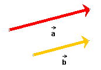
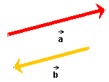
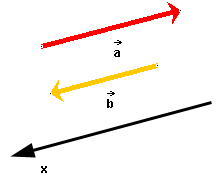

and
and  is denoted
is denoted  . Because of the notation for
the product, with a dot between the two factors, the product is also
called dot product.
. Because of the notation for
the product, with a dot between the two factors, the product is also
called dot product.
The scalar product of two vectors and is denoted . Because of the notation for
the product, with a dot between the two factors, the product is also
called dot product.
Although both factors and
are vectors, the value is a scalar. This explains
the name "scalar product". Mathematicians say that the scalar product
of two vectors is a rule that assigns a scalar to two vectors.
The manner in which the scalar product of two vectors is to be evaluated will now be described, in one and more than one dimension and in each of these cases in geometric and analytic fashion. The scalar product in one dimension is described below, in two and more dimensions on Page 2.
Scalar product in one dimension
In this case the two vectors either have the same direction, as in Figure 1 below,

Figure 1
or are oppositely directed, as in Figure 2 below.

Figure 2
(a) Geometric definition
= ab, if and
have the same direction.
if and
have the same direction. (1)
(1)
= -ab, if and
have opposite directions.
if and
have opposite directions. (2)
(2)
a and b denote the magnitudes of and .
(b) Analytic definition
=
axbx. (3)
(3)
ax and bx are the
x-components of and , respectively, relative to an
x-axis that is parallel to the two vectors. One such axis is
illustrated in Figure 3 below.

Figure 3
The x-axis in Figure 3 has been chosen to point in the
direction of vector .
It could also have been chosen to point in the opposite direction,
that of vector .
Comment. The signs of the scalar components ax and
bx depend on the direction of the x-axis,
but the product axbx does not.
In the case illustrated in Figure 3, ax = -a and
bx = b. Therefore,
axbx = =
-ab, as in Eq.(2) above.
If the direction of the x-axis were reversed, the signs of ax and bx would be reversed also, but the product axbx and the scalar product would remain unchanged.
The scalar product is a geometric quantity
that depends only on the two vectors
and and not on the choice of
coordinate axis.